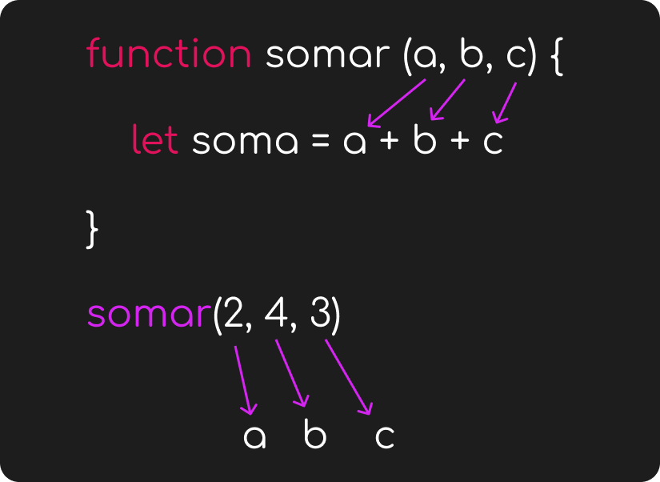

Parâmetros
Os parâmetros das funções são elementos que passamos dentro dos parênteses. Eles podem ser obrigatórios ou opcionais.
Os parâmetros aguardam por valores, ou seja, recebem argumentos que podem ser passados quando a função é chamada, por exemplo.
